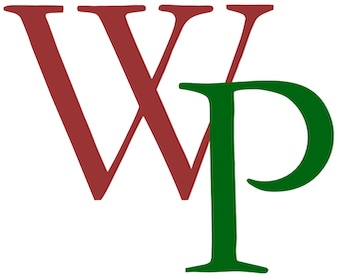

The WesterParse Project is a suite of tools for parsing and analyzing tonal music in the tradition of Heinrich Schenker, based on the work of Peter Westergaard.
Created by Robert Snarrenberg

The WesterParse Project is a suite of tools for parsing and analyzing tonal music in the tradition of Heinrich Schenker, based on the work of Peter Westergaard.
The first tool is designed to evaluate basic species counterpoint exercises for conformity with Westergaard’s rules of line construction and voice leading.
The second tool (under development) will parse linear elaborations in melodic lines, using the repertory of linear operations described by Westergaard.
Principal Investigator
Robert Snarrenberg, Associate Professor of Music, Washington University
Phase One: 2018–2020
Stephen Pentecost, Senior Digital Humanities Specialist, Humanities Digital Workshop, Washington University
Phase Two: 2025
Douglas Knox, Assistant Director, Humanities Digital Workshop, Washington University
Tumaini Ussiri, Digital Humanities Specialist, Humanities Digital Workshop, Washington University
Michelle Zhang, WU undergraduate student
Dexter Chen, WU undergraduate student
James Baba, WU undergraduate student
This project would not have been possible without the ongoing support of the Humanities Digital Workshop at Washington University in St. Louis.
Financial support for Phase Two was provided by a generous grant from the Digital Intelligence and Innovation Accelerator at Washington University.
The WesterParse Project is based on ideas developed by Peter Westergaard in An Introduction to Tonal Theory (New York, 1975).
WesterParse is built on top of music21, a toolkit for computer-aided musicology developed by Michael Asato Cuthbert and colleagues at MIT. We gratefully acknowledge their work and the open-source community that supports it.
The WSCO web interface was built using VexFlow, with audio feedback provided by tone.js and midi.js. File export to pdf makes use of Lilypond.